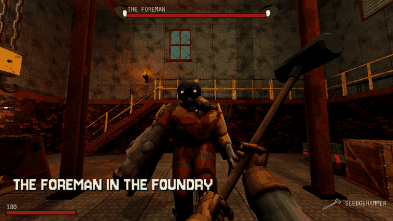

Tutorials › Add Hit Feedback and Sounds to a Boss Fight
How to Add Hit Feedback and Sounds to a Boss Fight in Godot 4
A sound and four ticks at the crosshair when a hit lands, a sound per swing and shot, red edges when hurt.

In a first-person fight the player cannot see their own blow land on a boss across the room, so the game has to say it. One CanvasLayer listens to three signals: a weapon's struck when a blow or a shot lands, its clip_event as its animation passes a moment, and the player's hurt. It plays a sound for each through four voices, so a shot and its hit do not cut each other off, marks a hit with four short ticks round the crosshair and the player's hurt with red edges; both fade.
Script: hit_feedback.gd (MIT) · Godot 4.3 or newer · its folder on GitHub
How to use it
- Add a
CanvasLayerto your scene and attachhit_feedback.gd. - Give it
sounds, a dictionary by name:hit,hurt, and one per clip event (swing,shot). A name with no sound is skipped. - Call
watch_weapon()for every weapon (any node withstruck(target, amount, at)andclip_event(event, clip, data)) andwatch_player()for the player (any node withhurt(amount, source)). - Tune
tick_color,tick_fadeandhurt_fade; connectplayedto see each sound as it plays.
What it needs
- Godot 4.3 or newer (the Compatibility renderer is enough).
- Weapons and a player that send the three signals; any sounds of your own.
Try it free
The Cordatix PSX Horror Free Sampler has the Offcut, PSX Horror Bosses' mini-boss, to fight; the script itself needs no file of a pack: give it your own weapons, player and sounds.
How it was tested
In Godot 4.3 and 4.7.2: on stand-ins (a node with a weapon's two signals, one with the player's hurt) a blow sets the ticks and plays the hit, a shot plays its sound and an event with none is skipped, the player's hurt reddens the edges, and both fade; in the pack, on its own first-person player and its nine items too.
The code
extends CanvasLayer
## How to Add Hit Feedback and Sounds to a Boss Fight in Godot 4
## Cordatix Godot 4 PSX tutorials, MIT licensed: https://github.com/GoldenSparrow-Dev/cordatix-godot-psx-tutorials
## The devlog: https://cordatix.itch.io/cordatix-psx-horror-bosses/devlog/1766008/how-to-add-hit-feedback-and-sounds-to-a-first-person-boss-fight-in-godot-4-cordatix-psx-horror-bosses
## Hit feedback for a first-person fight (Godot 4.3+): a short sound and four ticks round the crosshair when a blow
## or a shot lands, another sound for each swing and shot, and the screen's edges reddening when the player is hurt.
## Add it to your scene, then call watch_weapon() for each weapon and watch_player() for the player. A weapon is any
## node with the signals struck(target, amount, at) and clip_event(event, clip, data); a player any node with hurt.
signal played(sound: String)
## The sounds by name: "hit" when a blow lands, "hurt" when the player is hurt, and one per clip event ("swing",
## "shot"...). A name with no sound is skipped.
@export var sounds: Dictionary = {}
@export var tick_color := Color(0.95, 0.88, 0.70)
@export var tick_fade := 0.25
@export var hurt_fade := 0.7
var hit := 0.0 # 1 when a blow lands, fading to 0
var hurt := 0.0 # the same for the red edges
var _canvas := Control.new()
var _voices: Array[AudioStreamPlayer] = []
func _ready() -> void:
_canvas.set_anchors_preset(Control.PRESET_FULL_RECT)
_canvas.mouse_filter = Control.MOUSE_FILTER_IGNORE
_canvas.draw.connect(_paint)
add_child(_canvas)
for i in 4:
var v := AudioStreamPlayer.new()
add_child(v)
_voices.append(v)
func watch_weapon(w: Node) -> void:
w.connect("struck", func(_t, _a, _at) -> void:
hit = 1.0
play("hit"))
w.connect("clip_event", func(event: String, _clip, _data) -> void: play(event))
func watch_player(p: Node) -> void:
p.connect("hurt", func(_amount, _source) -> void:
hurt = 1.0
play("hurt"))
## Plays a sound by name on the next of four voices in turn (a fifth sound at once cuts the oldest).
func play(sound: String) -> void:
var s: AudioStream = sounds.get(sound)
if s == null:
return
var v: AudioStreamPlayer = _voices.pop_front()
_voices.append(v)
v.stream = s
if DisplayServer.get_name() != "headless": # a server or a test run has nothing to hear
v.play()
played.emit(sound)
func _process(delta: float) -> void:
hit = maxf(hit - delta / tick_fade, 0.0)
hurt = maxf(hurt - delta / hurt_fade, 0.0)
_canvas.queue_redraw()
func _paint() -> void:
var c := _canvas.size / 2.0
var s := _canvas.size.y / 480.0
if hit > 0.0:
for d in [Vector2(1, 1), Vector2(-1, 1), Vector2(1, -1), Vector2(-1, -1)]:
_canvas.draw_line(c + d * 6.0 * s, c + d * 12.0 * s, Color(tick_color, hit), 2.0 * s)
if hurt > 0.0:
var e := minf(_canvas.size.x, _canvas.size.y) * 0.12
var red := Color(0.55, 0.02, 0.02, 0.35 * hurt)
var r := Rect2(Vector2.ZERO, _canvas.size)
for edge in [Rect2(0, 0, r.size.x, e), Rect2(0, r.size.y - e, r.size.x, e), Rect2(0, 0, e, r.size.y),
Rect2(r.size.x - e, 0, e, r.size.y)]:
_canvas.draw_rect(edge, red)
The devlog and the pack
The step-by-step walkthrough is the devlog How to Add Hit Feedback and Sounds to a First-Person Boss Fight in Godot 4 (Cordatix PSX Horror Bosses 2.0) on itch.io, written for Cordatix PSX Horror Bosses, a PS1-style asset pack by Cordatix for Godot 4, Unity, Unreal and Blender.